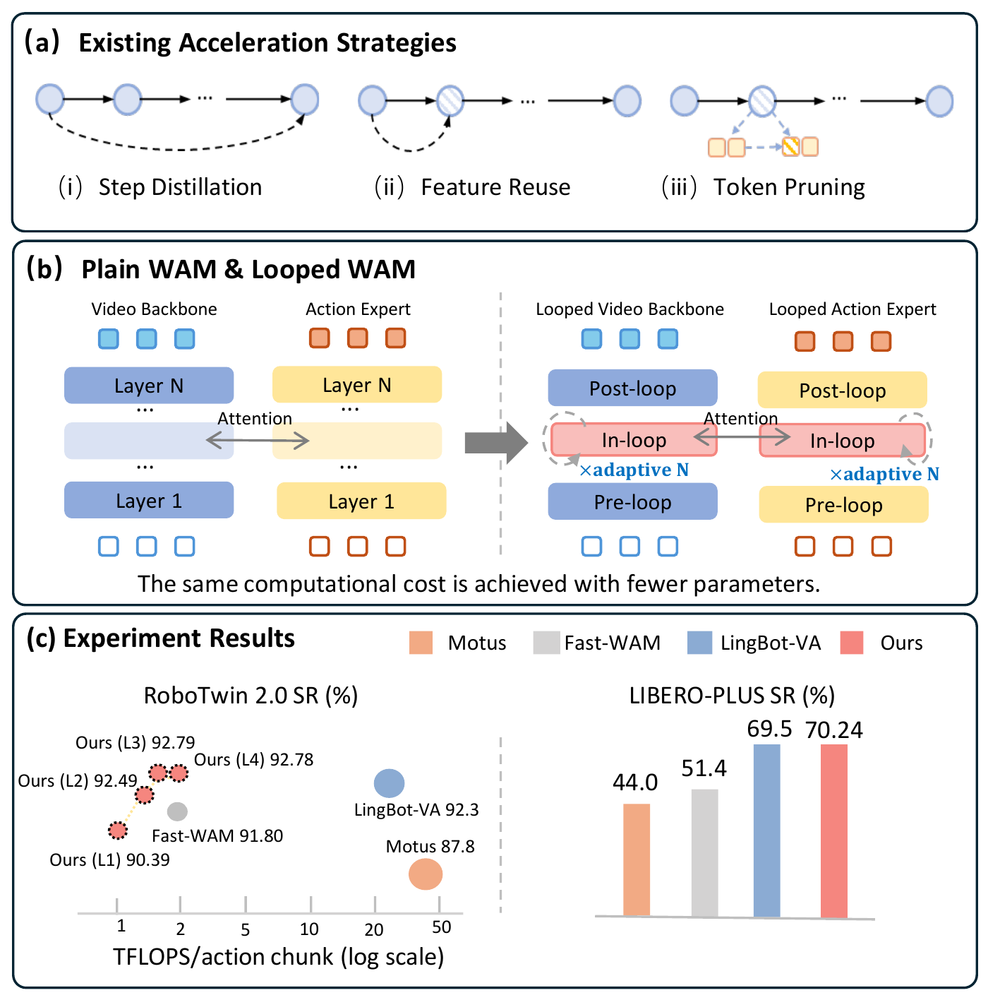
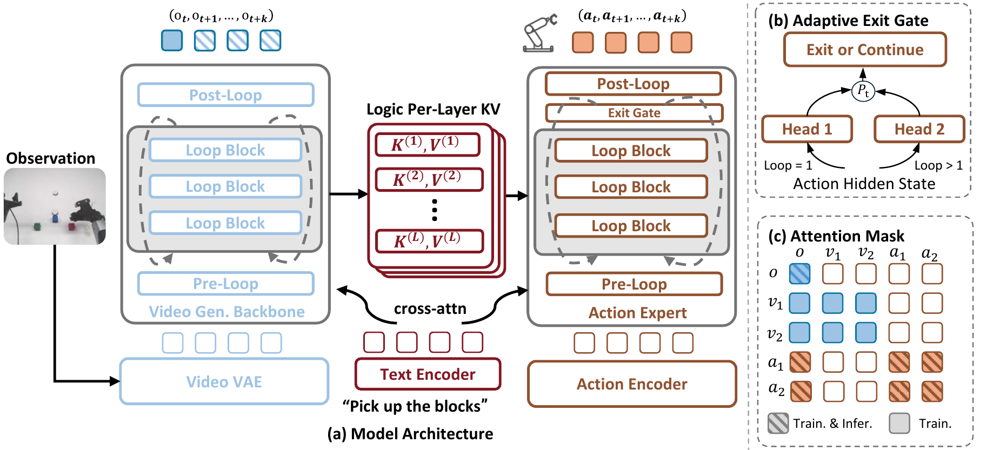
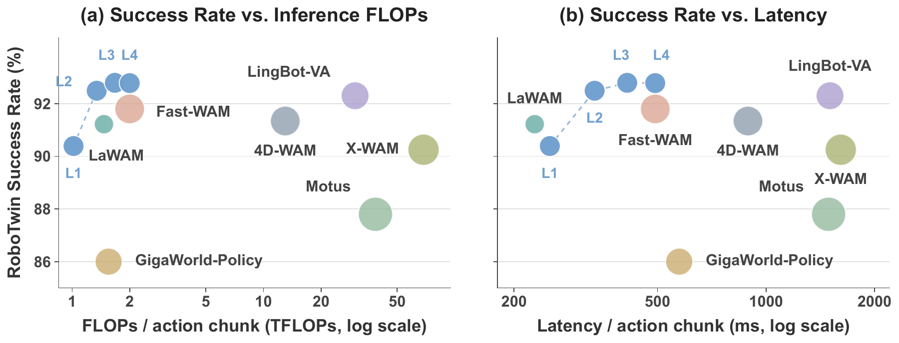
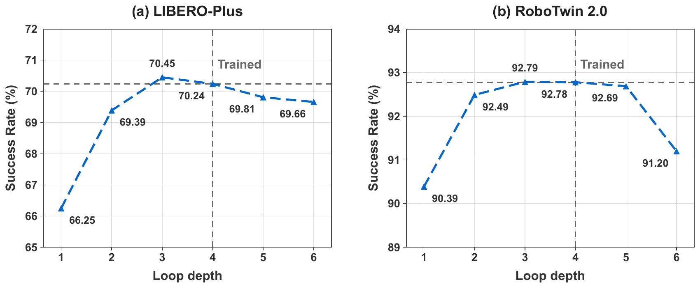

Looped-WAM: Efficient Robotic Manipulation via Looped World Action Modeling
University of Science and Technology of China
Overview

In this paper, we propose Looped-WAM, a parameter-efficient WAM built on a looped Transformer architecture that shares block parameters across recurrent iterations. Looped-WAM matches the performance of larger models with fewer parameters and a smaller memory footprint, while allowing test-time computation to be adjusted through recurrent depth.
We further observe that recurrent refinement reduces the number of robot execution steps required for task completion. We introduce an adaptive computation mechanism that varies recurrent depth during inference to further reduce execution steps while maintaining task success rates.
Looped-WAM architecture
The two branches maintain modality-specific parameters while exchanging information through joint self-attention. We preserve this cross-modal interaction mechanism while reorganizing each branch into three sequential stages, namely the Pre-loop, In-loop, and Post-loop. This three-stage organization is applied to both branches while retaining joint video-action attention. The Pre-loop performs initial feature processing, the In-loop iteratively refines the latent representations, and the Post-loop produces the final predictions.

Real-world robot videos
We compare Looped-WAM with Fast-WAM on the AgileX NERO platform across three manipulation tasks, with 21 evaluation trials per task. To test robustness, we randomize object and container positions, vary block colors, and alternate basket placements where applicable. We collect 100 training episodes per task, train jointly on all three tasks, and then fine-tune on each task separately.
Object classification
The robot sorts two categories of objects into separate baskets. It picks up the fruits and places them in the large basket, then picks up the colored blocks and places them in the small basket.
Block tower building
Starting with three blocks on the table, the robot picks up the right block and stacks it on the middle block. It then picks up the left block and places it on top of the right block to complete a stable three-block tower.
Fruit packing and pouring
The robot first collects the fruits and places them in a small container. It then grasps that container and pours the fruits into a larger one.
Benchmark results
We evaluate Looped-WAM on LIBERO-Plus under seven distribution shifts and on RoboTwin 2.0 in clean and randomized scenes.
Simulation benchmarks
| Method | Parameters | LIBERO-Plus | RoboTwin 2.0 |
|---|---|---|---|
| Fast-WAM | 6.0B | 51.4% | 91.8% |
| Looped-WAM-Fixed | 3.0B | 70.24% | 92.8% |
| Looped-WAM-Adaptive | 3.0B | 71.47% | 92.6% |
Efficiency and recurrent depth
Compute and latency
RoboTwin 2.0 success rates are plotted against FLOPs and latency per action chunk. Measurements use an RTX 3090 in BF16 with 16 actions per chunk and 10 denoising steps.

Effect of loop depth
Success improves from one to three loops on both benchmarks. On five selected RoboTwin tasks, adaptive inference uses the fewest execution steps in eight of ten task–setting combinations.

Citation
@misc{yangLoopedWAM,
title = {{Looped-WAM}: Efficient Robotic Manipulation via Looped World Action Modeling},
author = {Yang, Jingpeng and Wang, Yikun and Liu, Panjun and Zhuang, Xinyao and Xu, Weiye and Deng, Jiajun and Zhou, Wengang and Li, Houqiang},
url = {https://looped-wam.github.io/}
}